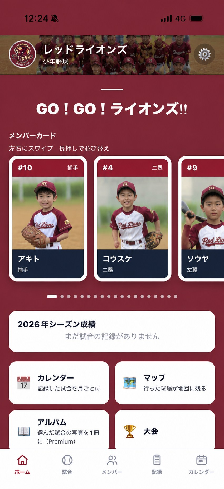
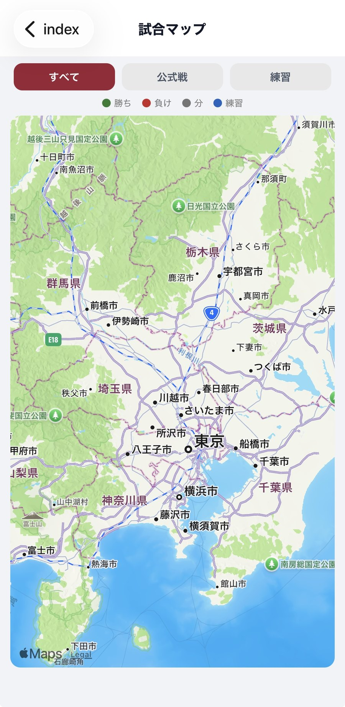
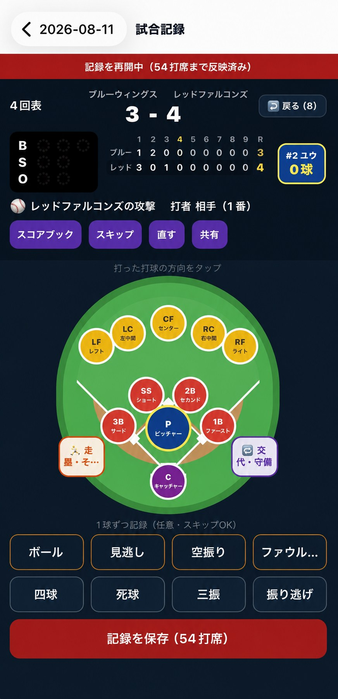
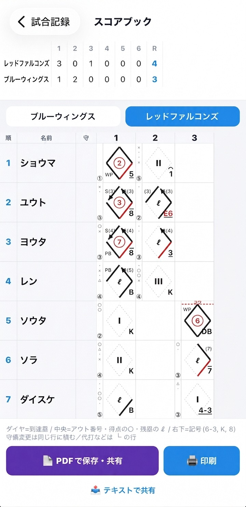
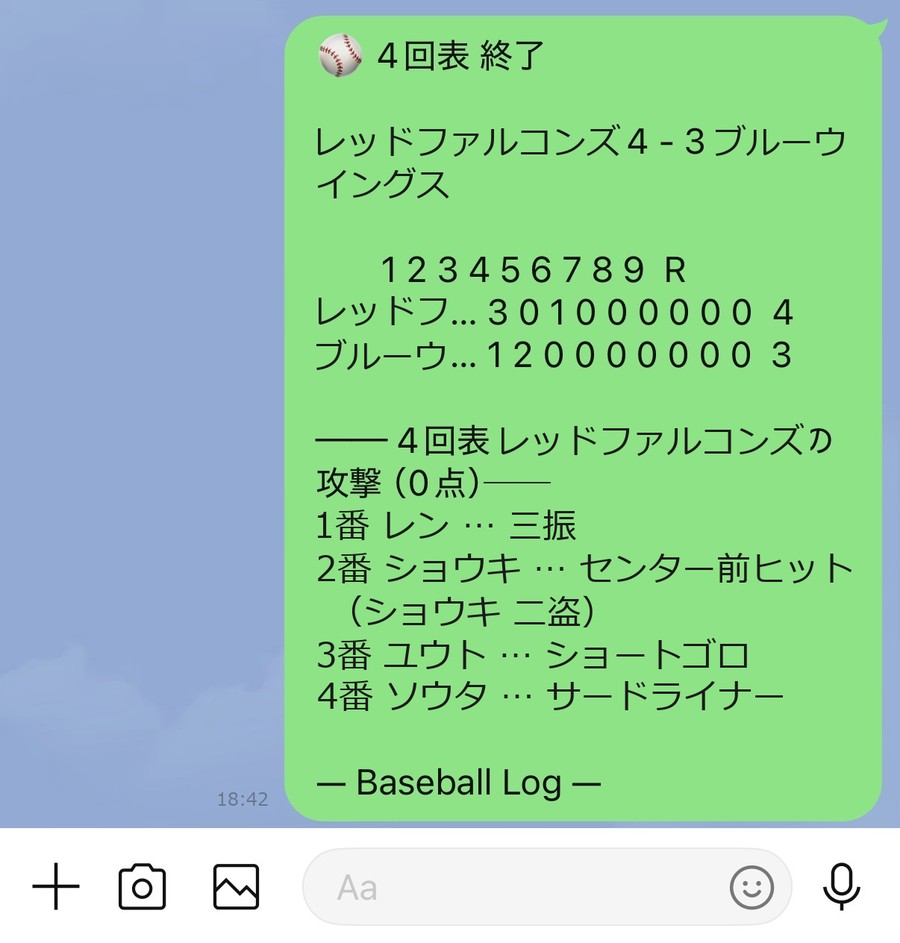
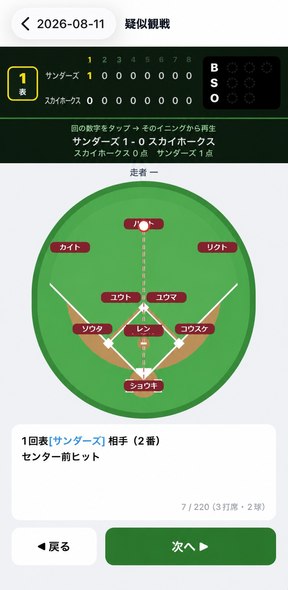

試合の日も、球場も、スコアも、その日の天気も。
バラバラだった1年ぶんを、ひとつにまとめて残しておくアプリです。

こんな場面のために
シーズンが終わるころには、記憶はバラバラになっています。
写真はカメラロールの奥、スコアは誰かのノート、球場の名前は誰も覚えていない。
Baseball LOG は、その1年ぶんを1か所に集めておくアプリです。
1 ／ 思い出として残る
試合の日・場所・スコア・成績・天気・写真。ひとつずつはメモでも残せますが、つながっていないと後から思い出せません。
ホームを開くと、今年ここまでの戦績と、子どもたちのカードが並びます。 去年より打てるようになったのか。何試合出たのか。数字は勝手に積み上がっていきます。
試合を記録すると、球場やグラウンドが自動で地図に記録されます。 住所を打ち込む必要はありません。天気も一緒に残ります。

2 ／ だれでも書ける
少年野球の当番で、いちばん困るのがこれです。その「書ける人」を、アプリが引き受けます。
画面は球場の絵です。レフトに飛んだらレフトを押す。するとそこで起こりうる結果だけが出てきます。 「ヒット」「フライ」「エラー」から選ぶだけ。四球や三振は下のボタンひとつです。

タップした記録は、早稲田式のスコアブックとして仕上がります。市販のスコアブックと同じ書き方なので、 監督やコーチにそのまま渡せます。

3 ／ 行けなかった人にも届く
「勝ったの？」の一言で終わらせない。球場にいる人と、いない人のあいだをつなぎます。
回が終わるたびに、スコアとその回の打席をまとめて送れます。 LINE でも、メールでも、iPhone から送れるところならどこへでも。 仕事や下の子の用事で来られない人にも、試合が動くたびに届きます。

疑似観戦を開くと、試合が最初から順に流れます。「次へ」を押すごとに走者が動き、点が入ります。 結果だけでなく、どういう試合だったのかを追いかけられます。

※ 画面はすべて記入例です。
できること
記録を取るところから、思い出として残すところまでを1つのアプリで。
お子さんを守るために
子どものチームで使うアプリだからこそ、設計の時点で決めていることがあります。
くわしくは プライバシーポリシー をご覧ください。
料金
試合を記録してスコアブックにするところまでは、お金がかかりません。
価格は App Store の表示が正となります。アルバム画面を開いて、収録する試合や期間を確かめるところまでは無料です。
よくある質問
はい。そのために作ったアプリです。打球が飛んだ場所を押すと、その場所で起こりうる結果だけが出てきます。アウトの数や走者の動き、得点や打点はアプリが計算します。「犠打として認められるか」といった細かい判断も、条件を満たしたときだけ選択肢に出るようにしています。
使えます。記録は端末の中で完結するので、圏外でも問題ありません。地図での球場登録と天気の取得だけは通信が必要なので、その場合はアプリがあらかじめお知らせします。
お使いの端末の中だけです。サーバーには送りません。機種変更のときは、アプリのバックアップ機能で記録と写真をまとめて書き出し、新しい端末で復元してください。
はい。招待コードを配ると、同じチームに参加できます。共有されるのは点数・試合の経過・背番号までで、選手の名前や写真は共有されません。メンバーは全員同じ権限なので、卒団で誰が抜けても引き継ぎの作業が要りません。
現在は iPhone / iPad のみです。
使えます。少年野球の保護者を中心に考えて作っていますが、記録の仕組みは公認野球規則にそっているので、草野球・社会人・部活動でもそのまま使えます。